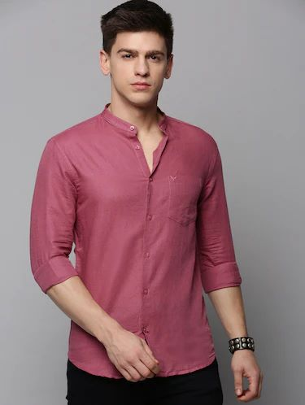

SERVICES

BATTERY REPLACEMENT

FUEL CHANGE

1.POLO T-SHIRTS,2.V-NECK T-SHIRTS,3.HENLEY T-SHIRTS,4.HOODED T-SHIRTS
Polo T-shirts are extremely flexible as you can wear them for golf, formal as well as occasions, get-together,
spending time with companions or even a date night! Among different types of t-shirts,
bright color polo-t-shirt will look great on a slender body outline as they make a deception of a more full chest area
Among different t-shirt styles, the V-neck ones are very versatile. Because any season is a decent season to accumulate,
gather and wear V-neck shirts . They're vital, as they can be spruced up with a sweatshirt or overcoat,
go energetic with a track coat/jacket or hoodie, or can be simply worn alone on any kind of lower
A blend between an essential T-shirt and a polo, a Henley tee is an extraordinary approach to redesign your look unpretentiously.
The option of buttons yet no neckline adds a bit of class to your look. Accessible in both long and short sleeves,
and a wide assortment of textures, you will use this style lasting through the year.
Among various types of t-shirts for men, hooded t-shirts are exceptionally famous among design cognizant men.
These flexible and classy shirts add a perfectly measured proportion of edge to your off the office look.
You can wear them in all seasons as they can shield from heat, cold breeze and even a light shower.
1.OXFORD SHIRTS,2.SHORT-SLEEVE SHIRT,3.CUBAN COLLAR SHIRT,4.FABRIC SHIRT
The Oxford Shirt pairs brilliantly with a suit, but theyre also highly versatile and can fit in with casual wear,
daily office wear, and even weddings if you’re careful with your selection.
t’s made from so-called Oxford fabric, which is cotton with a basketweave, so its a little thicker and softer than cheaper cotton
Cotton short-sleeve shirts were once a fashion crime that screamed ‘blue-collar worker’. Nothing wrong with that,
of course, but you don’t want someone you’re meeting for the first time to assume you are their DoorDash delivery guy.
The short-sleeve shirt has been reinvented by designers recently.
The Cuban Collar shirt is a specific type of short-sleeved shirt with, of course, a Cuban-style open collar.
This can make them great to showcase a chunky necklace or similar jewelry. They typically have patterns and bolder colors.
Fashion magazines and websites often break down shirts by their fabric - ones that are not the classic cotton suit shirts.
Each fabric brings its own character to the table, but many carry some stereotyping, too, so bear that in mind when using these.
1.SLIM-FIT JEANS,2.SKINNY FIT JEANS,3.RIPPED JEANS,4.LOOSE FIT JEANS
Slim fit jeans are typically preferred by skinny men since they aid to elongate their legs.
These types of denim jeans fit snugly and have a narrow leg opening. Those who are thin and seek both comfort and style tend to like these
These types of denim jeans are different from slim-fit jeans. Yes, please avoid the confusion.
From the waist to the ankle, skinny jeans are just that—skinny.
These are typically worn as a fashion statement because they don't provide much mobility
Pants or jeans that have been intentionally ripped or destroyed are known as ripped jeans. The fabric can be ripped, torn,
or frayed to achieve this. As a result of the anarchist fashion craze in the 1980s, these jeans gained popularity.
Among the different types of jean fits, your breathing space is increased by the baggy fit of these jeans.
As a result, it doesn't adhere to your thighs too tightly when wearing loose pants around the thighs and butt.
These will undoubtedly be quite comfy if you have a large waist or large bones.
In terms of various male body shapes, loose jeans work best for big-boned males.